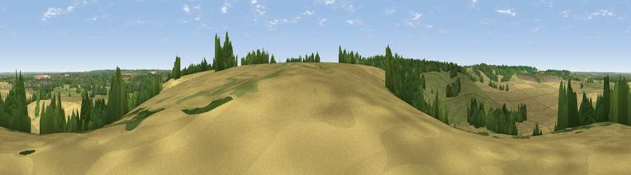

Viewpoint near Gosmore
#34363 in England · top 54% of its area beats it · near GosmoreThe view, rendered

A 360° render of this exact spot computed from the terrain model, tree cover and land cover — summer colours, afternoon light, calibrated against photographs of famous viewpoints. Real trees, hedges and buildings will differ in detail.
The panorama
Grey silhouette: terrain skyline in each direction (720 bearings, Earth curvature and refraction included). Dashed green: skyline with trees (+15 m) and buildings (+8 m) as obstacles. Blue strip: how far the ground is visible on each bearing.
Where the view opens
Wedge length = distance to the farthest visible ground on that bearing (vegetation-aware). Rings at 10, 25 and 50 km.
What fills the view
61% cropland · 25% grassland · 12% woodland · 2% built-up
Angular shares of the visible panorama (visual magnitude), not map area. Landscape diversity 0.43 (0–1 Shannon).
Key numbers
More beautiful places nearby
The staircase of upgrades: each row has a higher view potential than everything closer. Driving times are estimates from straight-line distance, calibrated against real road routing — check an actual route before setting out.
| Place | Direction | Drive | Score |
|---|---|---|---|
| Viewpoint near Pirton | NW · 5 km | ~10 min | 45.4 |
| Viewpoint near Great Offley | NW · 5 km | ~10 min | 54.4 |
| Viewpoint near Hexton | NW · 6 km | ~12 min | 65.4 |
| Viewpoint near Church End | WSW · 18 km | ~30 min | 65.8 |
| Beacon Hill | WSW · 23 km | ~38 min | 74.1 |
| Viewpoint near Halton | WSW · 33 km | ~51 min | 74.3 |
| Coombe Hill Monument | WSW · 38 km | ~57 min | 75.5 |
| Viewpoint near Woolstone | WSW · 96 km | ~120 min | 76.7 |
51.92626, -0.29664 · source: screening · position refined by local search. Computed location — check access rights before visiting.